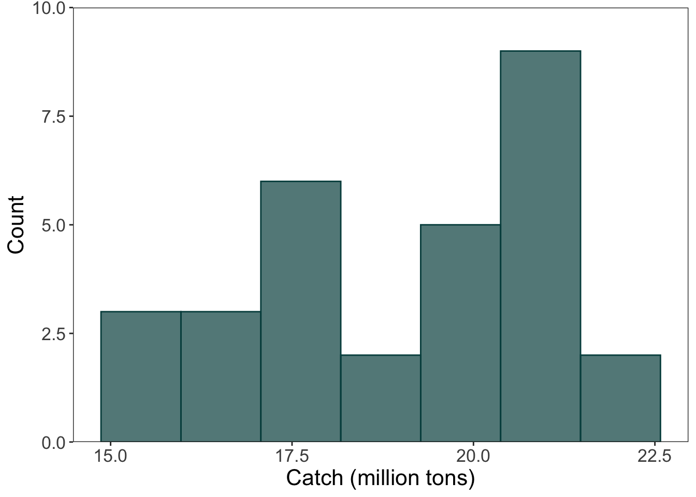
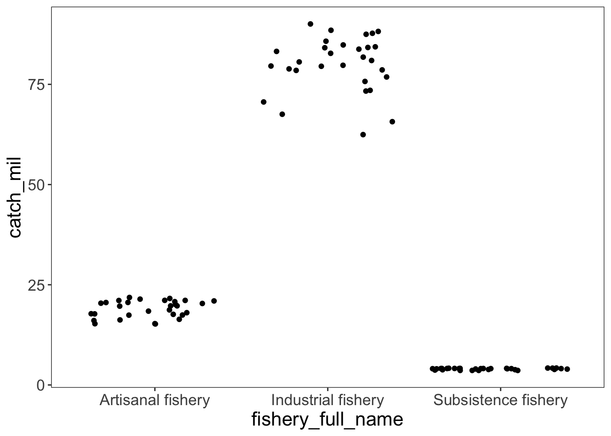
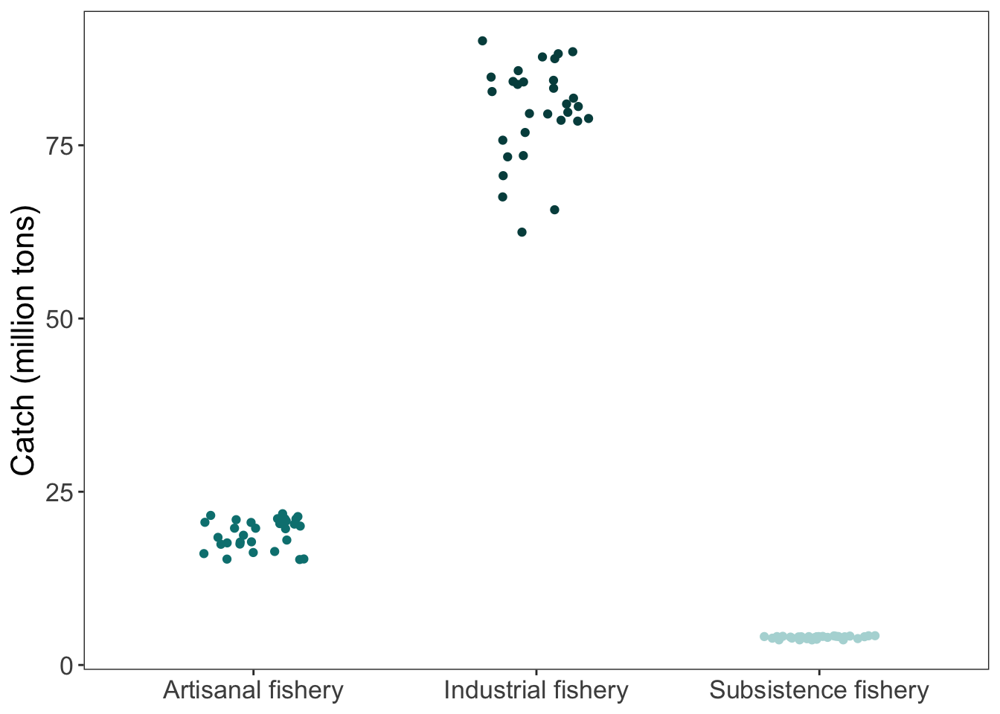
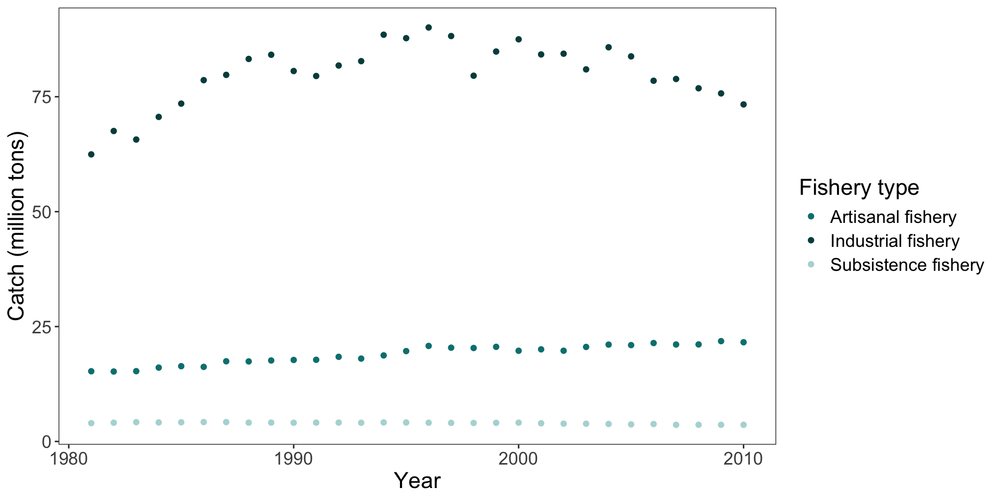

theme_set(
theme_bw() + # cleaner theme
theme(panel.grid = element_blank()) # taking the gridlines out
)Visualizing your data

Artwork by Allison Horst
Visually exploring your data
Exploring your data is a great way of getting to know it. There are a few basic ways you can visualize depending on what your variables are:
- If you want to know how your variable is distributed, you can make a histogram.
- If you want to know how a variable differs between groups, you can make a boxplot or a jitter plot.
- If you want to know how two continuous variables relate to each other, you can make a scatterplot.
Tools
We’ll use ggplot() from the ggplot2 package in the tidyverse for these examples!
Making your
ggplot() objects look cohesive
I like to use theme_set() to set a global “look” for my plots. This ensures that every plot in the document has the same basic aesthetic changes, while still leaving room for customization in each plot.
In a code chunk at the beginning of your document, you can use theme_set() to apply theme() elements to all the plots you make:
Exploring distributions using histograms
For this example, we’ll create a histogram for the artisanal fishery.
Function: geom_histogram()
artisanal <- global_catch_clean %>%
# filtering for artisanal fishery only
filter(fishery_type == "artisanal")
# global ggplot call
ggplot(data = artisanal, # the data frame
aes(x = catch_mil)) + # the x-axis
# creating a histogram
geom_histogram(bins = 7, # number of columns/bins
alpha = 0.7, # making the bars a little transparent
fill = "#004c4c", # filling the bars
color = "#004c4c") + # outline of the bars
# extra stuff to make your plot look nicer
scale_y_continuous(expand = c(0, 0), # gets rid of the space below the bars
limits = c(0, 10)) + # sets the limits of the y-axis
# labelling the x- and y-axes
labs(x = "Catch (million tons)",
y = "Count")
Exploring differences between groups using jitter plots
Function: geom_jitter()
How jitters work
geom_jitter() randomly shakes points left and right and up and down to make them easier to see. This is fine, but sometimes weird to have a jitter applied up and down when the y-axis actually represents a value that you’re interested in.
Below are two ways of creating a jitter plot: the simple way (with no customization for where the jittered points go), and the more custom way (where you can control the position of the jittered points relative to the x- and y-axes).
Simple jitter (no customization):
# simple way to create a jitter plot
ggplot(data = global_catch_clean, # data frame
aes(x = fishery_full_name, # x-axis
y = catch_mil)) + # y-axis
geom_jitter()
Custom jitter with position = position_jitter():
# a way with a little more control over the jitter
ggplot(data = global_catch_clean, # data frame
aes(x = fishery_full_name, # x-axis
y = catch_mil, # y-axis
color = fishery_full_name)) + # coloring points by fishery - this is required for the scale_color_manual code to work!
geom_jitter(position = position_jitter(
width = 0.2, # shakes the points around left and right
height = 0, # doesn't shake the points up and down
seed = 1)) + # makes sure the "random" arrangement stays the same
# extra stuff to make the plot look nicer
# controlling the color of the points
scale_color_manual(values = c("Artisanal fishery" = "#008080",
"Industrial fishery" = "#004c4c",
"Subsistence fishery" = "#b2d8d8")) +
# labeling the y-axis
labs(y = "Catch (million tons)") +
theme(legend.position = "none", # taking out the legend
axis.title.x = element_blank()) # taking out the x-axis title (redundant)
Exploring differences between groups using boxplots
Function: geom_boxplot()
A boxplot shows the median of a group, the interquartile range, and 1.5x the interquartile range.
ggplot(data = global_catch_clean, # data frame
aes(x = fishery_full_name, # x-axis
y = catch_mil, # y-axis
fill = fishery_full_name)) + # filling the boxplot by fishery, again needed for the scale_fill_manual code to work!
geom_boxplot() +
# extra stuff to make the plot look nicer
# controlling the fill of the boxplots
scale_fill_manual(values = c("Artisanal fishery" = "#008080",
"Industrial fishery" = "#004c4c",
"Subsistence fishery" = "#b2d8d8")) +
# labeling the y-axis
labs(y = "Catch (million tons)") +
theme(legend.position = "none", # taking out the legend
axis.title.x = element_blank()) # taking out the x-axis title (redundant)Exploring relationships between variables using scaterplots
Function: geom_point()
In this example, the x-axis is year and the y-axis is catch (million tons), but you can explore any continuous variables this way!
ggplot(data = global_catch_clean, # data frame
aes(x = year, # x-axis
y = catch_mil, # y-axis
color = fishery_full_name)) + # coloring by fishery
geom_point() +
# extra stuff to make the plot look nicer
# controlling the color of the points
scale_color_manual(values = c("Artisanal fishery" = "#008080",
"Industrial fishery" = "#004c4c",
"Subsistence fishery" = "#b2d8d8")) +
# labeling the y-axis and the legend
labs(x = "Year",
y = "Catch (million tons)",
color = "Fishery type") 